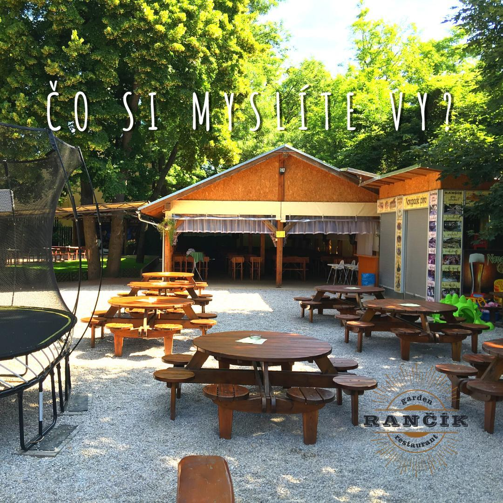

Polievky 🍲 podľa @rancik_restauracia — Normy Jedál
Už by sme vás radi privítali na našej terase 🙏, ale sami netušíme, kedy ju otvoríme 🤔.
Čo myslíte, kedy nám opäť dovolia užívať si krásny život pri jedle s vetrom vo vlasoch 🌞? Budeme radi za vaše komentáre 👍.
#jedlo #rancik #mnam #chutnejedlo #zdravojem #jedlobratisalva #laska #restaurant #restauracia #menu #gardenrestaurant #food #bratislava #petrzalka #delicious #foodlover #drinks #tasty #jedlo #jedlovnoci #bratislava #jedlovblave #hlad #polievky #zahradnarestauracia